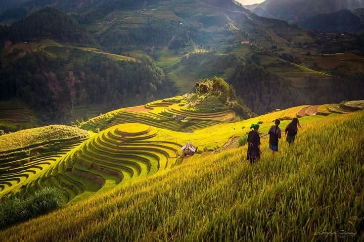
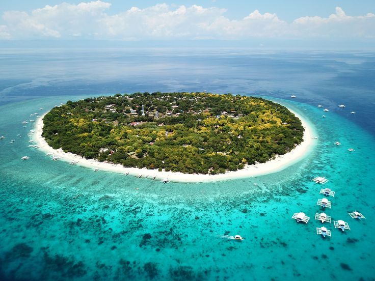
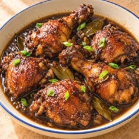
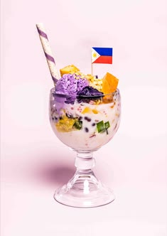
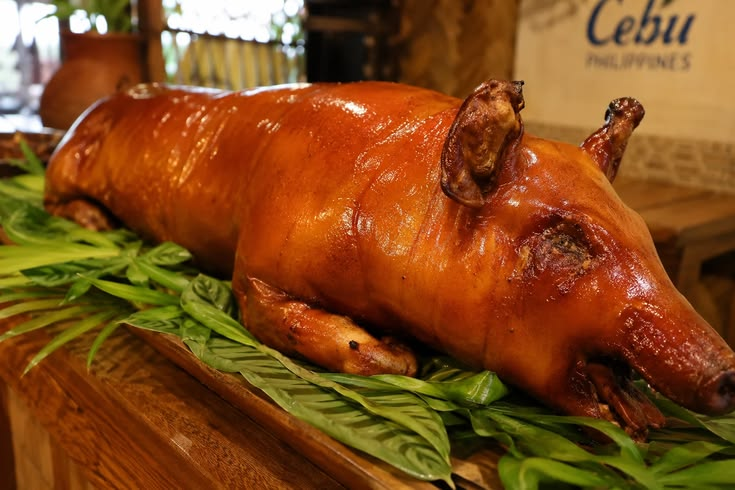
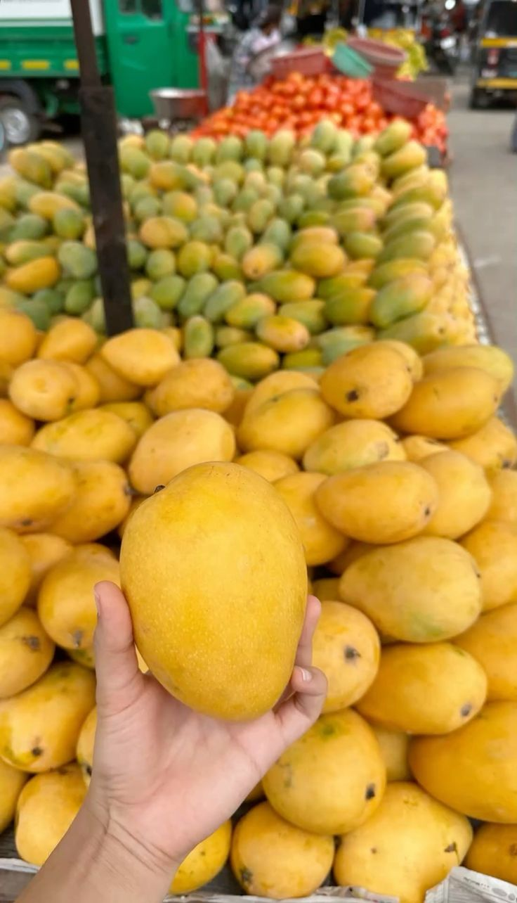

Palawan
El Nido and Coron: lagoons, limestone cliffs, shipwreck dives.
- Island-hop through the Bacuit Bay lagoons
- Dive Japanese wrecks in Coron
- Float through the Puerto Princesa Underground River
Best: Nov–MayBeachDiving
Labausa, Jhunie C.
Duquisa, Loraiine R.
Rianias, Ronnel O. Jr.
Latorre, Mark John B.
Endaya, Arvin Mikel L.
Seven thousand islands, warm people, and sunsets that make you miss your flight. Pick an island and start planning.
Explore the islandsFrom white-sand beaches to rice terraces carved by hand 2,000 years ago, the Philippines packs a whole continent’s worth of adventure into one country.
Tap a place to see what it’s known for and when to go.
El Nido and Coron: lagoons, limestone cliffs, shipwreck dives.

Waterfalls, whale sharks, and the oldest city in the country.

The surfing capital, with palm-lined roads and slow island days.

The Ifugao rice terraces, a UNESCO World Heritage Site above the clouds.

Chocolate Hills, tiny tarsiers, and quiet river cruises.
Filipino food is salty, sour, sweet, and made for sharing.

Adobo
Halo-halo
Lechon
MangoHover over a card, or focus it with Tab, to flip it.
Quick answers, plus a packing list you can tick off.
November to May is the dry season. March to May is hottest and best for beaches. June to October brings rain and typhoons, but fewer crowds and lower prices.
Fly with budget airlines for long hops, and take ferries or bangkas (outrigger boats) for short ones. Book ferries early in peak season.
Backpackers can manage on about ₱2,000 a day. Mid-range travelers should plan for ₱4,000–₱6,000, including hotels, meals, and tours.
Most tourist areas are welcoming and easy to visit. Watch your belongings in crowds, check the weather before boat trips, and follow local advisories.
“Salamat” means thank you, “magandang umaga” is good morning, and “po” adds respect. A smile goes further than any phrase.
Pack light, bring an appetite, and leave room for the unplanned detour. That’s usually the best part.
Choose your first island